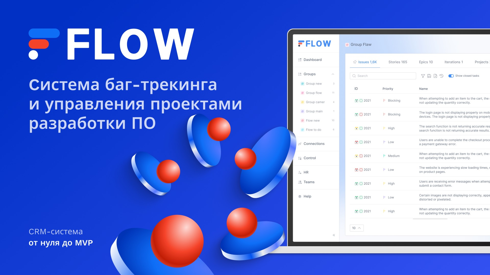
Flow — это система баг-трекинга и управления проектами разработки ПО, спроектированная для разработчиков, QA и PM. Flow — не система с зафиксированным процессом, а конструктор статусной модели под чужой процесс.
Роль: UX/UI-дизайнер — единственный дизайнер в команде из 8 человек, 4 месяца от первого экрана до передачи в разработку, методология Waterfall.
Продукт: Система баг-трекинга и управления проектами разработки ПО: рабочие таблицы, доски Kanban/Scrum, документация, UI Kit — единая архитектура.
Пользователи: Разработчики, QA-инженеры, проектные и продуктовые менеджеры — вся команда разработки ПО, без разграничения ролей по доступу.
Задача: Спроектировать с нуля продукт для QA и управления проектами разработки, поддерживающий Kanban и Scrum на единой архитектуре данных.
Особенность: Kanban и Scrum — поверх одной структуры данных. Статусы ветвятся по типу сущности: у бага — цикл с повтором, у задачи — линейный путь.
Что сделано: 8 групп экранов, ~30 компонентных семейств UI-кита в светлой и тёмной теме, адаптив на 4 брейкпоинта. Продукт доведён до MVP.
Продукт является системой баг-трекинга, позволяющей выбрать методологию Kanban или Scrum с общей нижней частью экрана (Backlog и таблица issue) и разным способом организации верхней части экрана (доска Kanban или доска спринта), не дублируя архитектуру данных под каждую методологию отдельно. Поверх этого — настраиваемая статусная модель и workflow под конкретный бизнес или вид деятельности. Иерархия сущностей (issue → story → epic → project → sprint → board → team) при этом остаётся фиксированной. Отсюда и отсутствие прямых референсов при проектировании ряда фич — приходилось не копировать чужие паттерны, а создавать собственные.
Проект Flow стартовал без детального технического задания, только общее видение фаундера. Мне нужно было самостоятельно превратить неформализованное видение в конкретную архитектуру интерфейса, покрывающую все ключевые сущности продукта от issue до команд и спринтов.
Ключевое архитектурное решение: не проектировать под один фиксированный процесс, а поддержать сразу две методологии — Kanban и Scrum — поверх единой структуры данных, плюс настраиваемую статусную модель, которая зависит от типа сущности: у бага статусная цепочка ветвится, у задачи — короткий линейный путь.
Параллельно с продуктовыми задачами я развивала дизайн-систему продукта: порядка 30 компонентных семейств (кнопки, инпуты, дропдауны, теги, статусы и другие), единая типографическая шкала (H1–H6, Body, Caption) и цветовая палитра для обеих тем. Каждый компонент спроектирован с полным набором состояний (default / hover / active / disabled), что позволяло переиспользовать систему во всех группах экранов без визуальных расхождений.
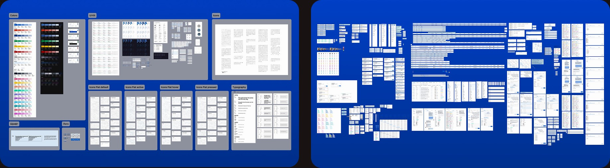
Интерфейс спроектирован на 4 брейкпоинта — 768 / 1024 / 1280 / 1440, включая collapse/expand-состояния навигации для широких экранов. Мобильная версия (менее 768 px) не проектировалась. Эти ограничения — результат приоритизации, команда сознательно сузила скоуп ради выхода MVP в срок.
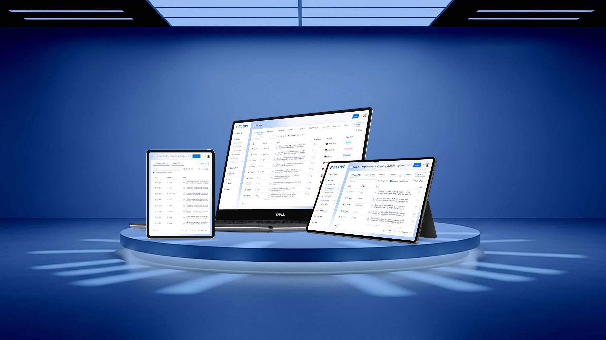
Полная параллельная со светлой темой проработка тёмной темы для системы и компонентов в day/night вариантах.
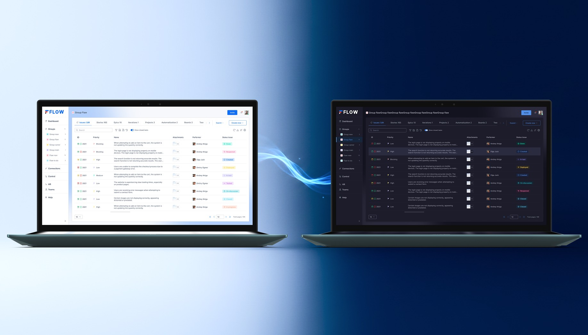
Sign in, Sign up, Restore password — единая точка входа для всей команды, без разграничения ролей на этом уровне.
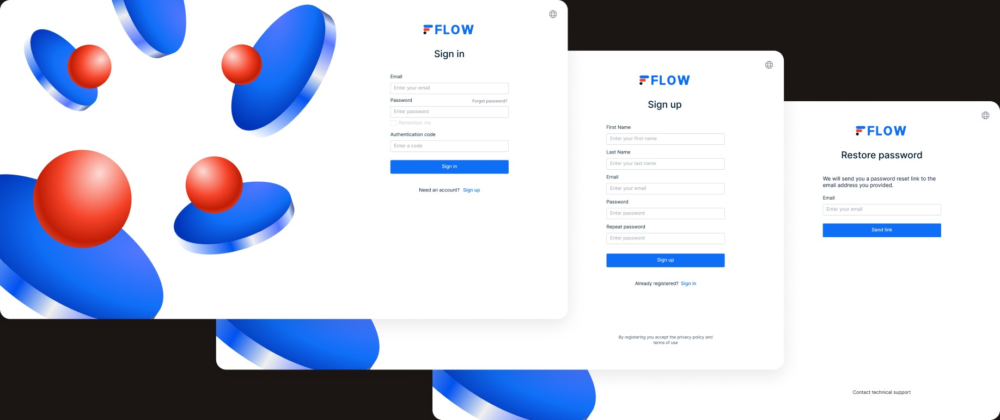
Общая структура Board + Backlog, но разный верхний блок в зависимости от выбранной методологии — ключевая архитектурная идея всего кейса.
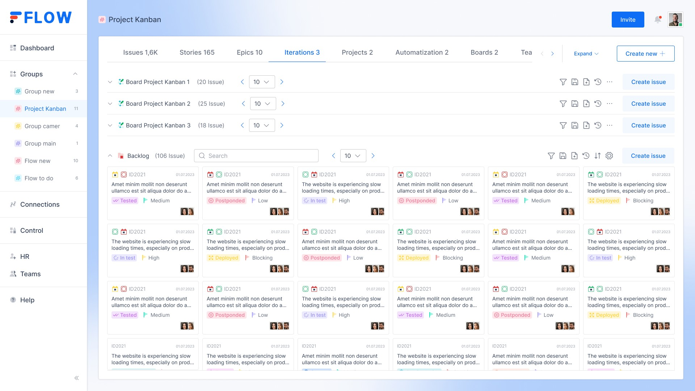
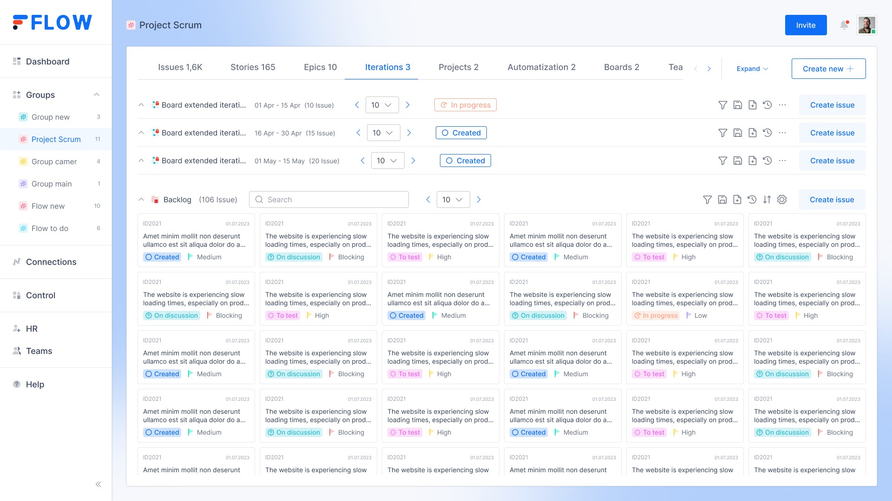
Отдельный no-code-слой поверх статусной модели: правило собирается из условий (Conditions) и действий (Actions) с операторами сравнения — is equal, contains, does not begin with, is not null и другими. Правила применяются к сущностям (issue, story) и внешним группам, включаются и выключаются без удаления, список правил ведёт историю созданного.
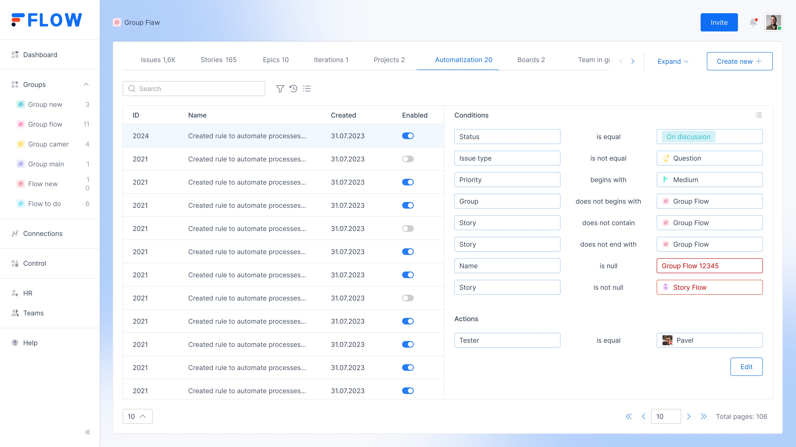
Issue, story, epic, project, sprint, board, team — показаны 2–3 характерные таблицы (issue и sprint): раздел про масштаб, а не про полноту.
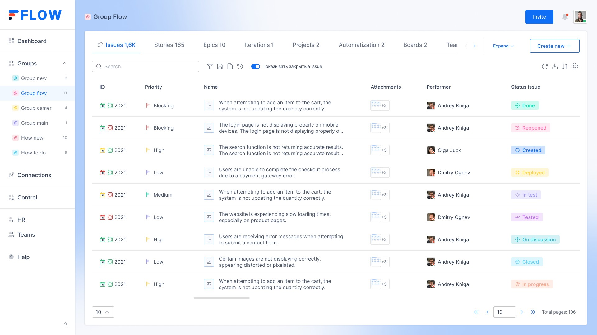
Модальное создание issue, просмотр/редактирование с историей изменений и комментариями — здесь показана глубина проработки одного сценария полностью, а не поверхностно все сразу.
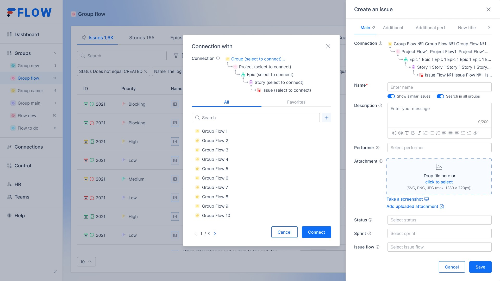
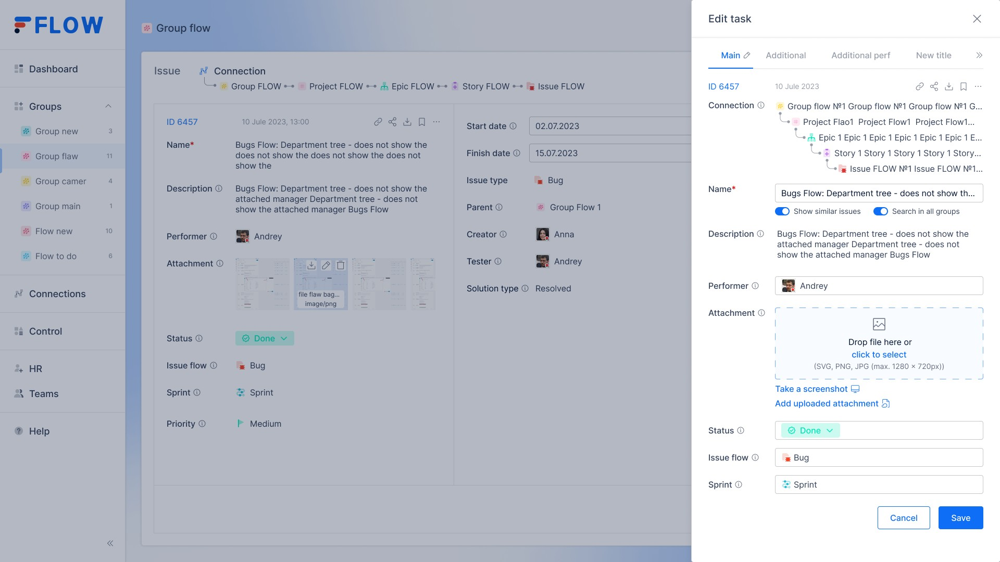
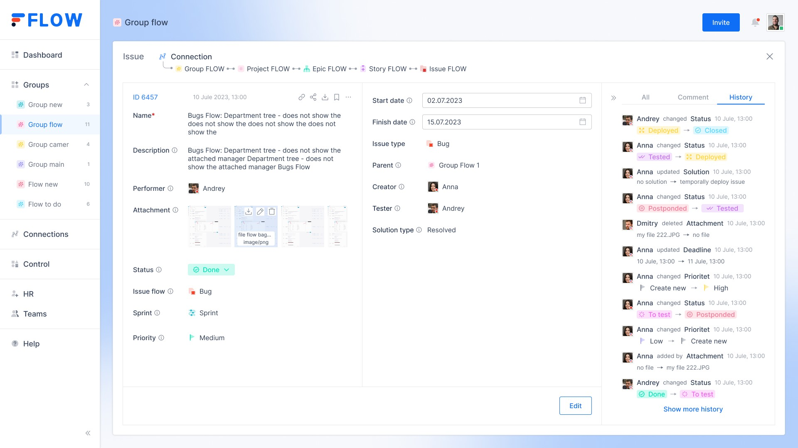
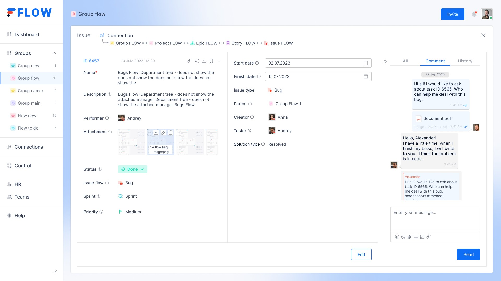
Мультиязычная база знаний на 5 языках — сильная деталь, которой обычно нет в трекерах такого масштаба. Вложенная навигация до 3 уровней (Section → Subsection → страница), якорное оглавление справа, блоки кода с подсветкой синтаксиса для API-примеров (GraphQL mutations), inline-компоненты предупреждений.
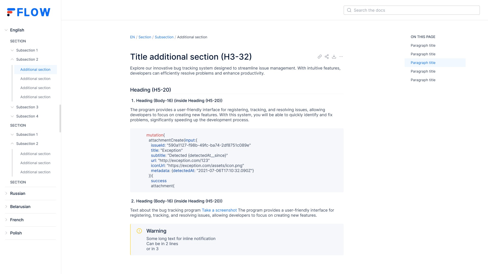
Три ключевых сценария из пяти: приглашение в систему, активация аккаунта после регистрации, призыв создать первую задачу — вспомогательный, но живой слой продукта.
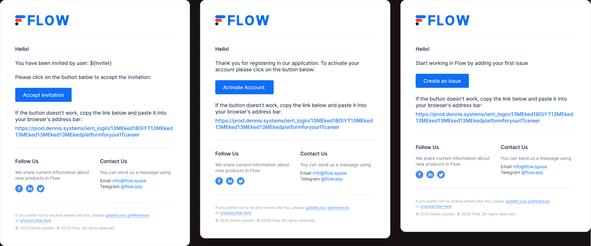
Проект дал опыт полного цикла продуктового дизайна в условиях неопределённости: без готового ТЗ, без референсов для части фич, с прямой зависимостью от технических возможностей команды разработки. Работа по Waterfall-методологии потребовала точной фиксации решений на старте и умения формализовывать неявные требования фаундера в конкретную архитектуру интерфейса.
Продукт за 4 месяца доведён до MVP, а дизайн-система осталась согласованной с тем, что команда физически могла реализовать на данном этапе. Дальнейшая судьба проекта неизвестна, по имеющимся данным используется фаундером во внутренних проектах.
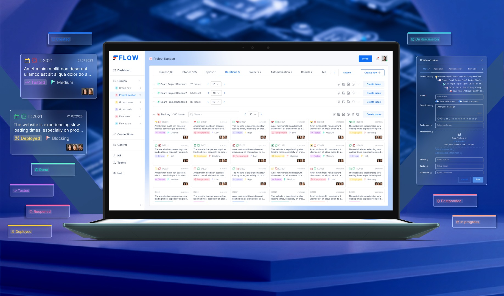